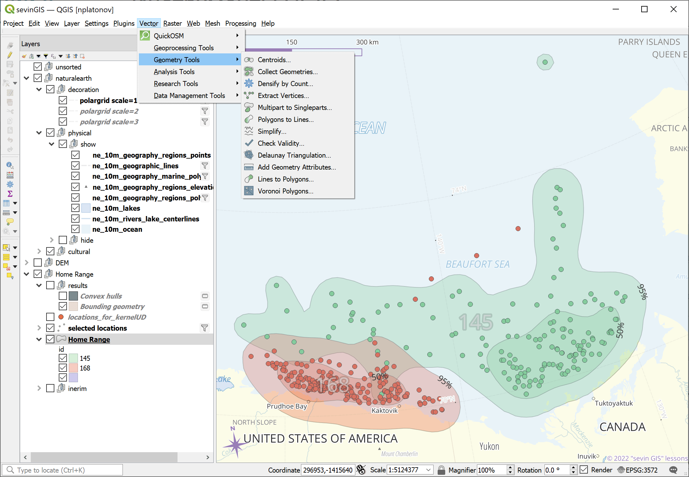
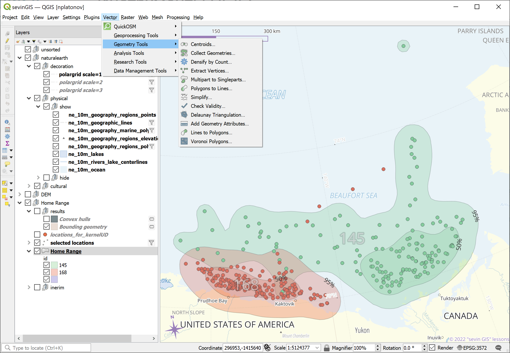

Инструменты QGIS
“Геообработка”

“Геометрия”


Пакет для визуализации: tmap.
Loading required package: tmapBreaking News: tmap 3.x is retiring. Please test v4, e.g. with
remotes::install_github('r-tmap/tmap')tmap mode set to interactive viewingПакет для геообработки: sf.
Шпаргалка по миграции между sp и sf:
hr <- sf::st_read("data/hr.geojson",quiet=TRUE) |>
sf::st_transform(3572)
sf::st_agr(hr) <- "constant"
hr2 <- lapply(unique(hr$id),function(id) {
hr2 <- hr[hr$id==id,]
ulevel <- unique(hr2$level)
hr3 <- lapply(ulevel,function(level) hr2[hr2$level==level,])
names(hr3) <- ulevel
hr4 <- list('50-95'=sf::st_difference(sf::st_geometry(hr3[["95"]])
,sf::st_geometry(hr3[["50"]]))
,'0-50'=sf::st_geometry(hr3[["50"]])
)
sf::st_sf(id=id,level=names(hr4)
,geometry=do.call(rbind,hr4),crs=sf::st_crs(hr))
})
hr2 <- do.call(rbind,hr2)
hr2 <- sf::st_transform(hr2,4326)
hr2$group <- paste(hr2$id,hr2$level,sep=":")Linking to GEOS 3.11.2, GDAL 3.7.2, PROJ 9.3.0; sf_use_s2() is TRUEError : Shape contains invalid polygons. Please fix it or set tmap_options(check.and.fix = TRUE) and rerun the plot[1] TRUE FALSE TRUE FALSEif (length(ind <- which(!sf::st_is_valid(hr2))))
hr2[ind,] <- sf::st_make_valid(hr2[ind,])
sf::st_is_valid(hr2)[1] TRUE TRUE TRUE TRUE| id | level | geometry | group |
|---|---|---|---|
| 145 | 50-95 | MULTIPOLYGON (((-152.9586 7… | 145:50-95 |
| 145 | 0-50 | POLYGON ((-138.281 70.63453… | 145:0-50 |
| 168 | 50-95 | POLYGON ((-152.4999 71.1491… | 168:50-95 |
| 168 | 0-50 | POLYGON ((-150.1846 70.6716… | 168:0-50 |
id level group
constant constant constant
Levels: constant aggregate identity[1] "constant" "aggregate" "identity" "constant" - атрибут постоянны по всей геометрии (землепользование)"aggregate" - атрибут агрегированы по геометрии (плотность населения)"identity" - однозначное идентифицирование (название города)
## Преобразование| id | area | level | geometry | |
|---|---|---|---|---|
| 1 | 145 | 200163.21 | 95 | POLYGON ((-109626 -2021301,… |
| 1.1 | 145 | 200163.21 | 95 | POLYGON ((545079.1 -1448190… |
| 2 | 145 | 35748.68 | 50 | POLYGON ((437079.1 -2107065… |
| 3 | 168 | 73098.40 | 95 | POLYGON ((-90920.86 -210402… |
| 4 | 168 | 17253.45 | 50 | POLYGON ((-6920.856 -214782… |
326263.7 [km^2]| id | area | level | geometry |
|---|---|---|---|
| 145 | 200163.21 | 95 | MULTIPOLYGON (((-109626 -20… |
| 145 | 35748.68 | 50 | MULTIPOLYGON (((437079.1 -2… |
| 168 | 73098.40 | 95 | MULTIPOLYGON (((-90920.86 -… |
| 168 | 17253.45 | 50 | MULTIPOLYGON (((-6920.856 -… |
326263.7 [km^2]0 [km]| id | level | group | geometry |
|---|---|---|---|
| 145 | 50-95 | 145:50-95 | MULTILINESTRING ((-152.9586… |
| 145 | 0-50 | 145:0-50 | MULTILINESTRING ((-138.281 … |
| 168 | 50-95 | 168:50-95 | MULTILINESTRING ((-152.4999… |
| 168 | 0-50 | 168:0-50 | MULTILINESTRING ((-150.1846… |
0 [km^2]6748.012 [km]| id | level | group | geometry |
|---|---|---|---|
| 145 | 50-95 | 145:50-95 | MULTIPOINT ((-152.9586 71.9… |
| 145 | 0-50 | 145:0-50 | MULTIPOINT ((-138.281 70.63… |
| 168 | 50-95 | 168:50-95 | MULTIPOINT ((-152.4999 71.1… |
| 168 | 0-50 | 168:0-50 | MULTIPOINT ((-150.1846 70.6… |
union <- sf::st_union(hr)
m2 <- tm_shape(hr2)+tm_polygons("group",alpha=0.5,group="Kernel levels")+
tm_shape(union)+tm_borders(col="black",lwd=3,lty="dashed",alpha=1,group="Join")centroid <- sf::st_centroid(hr2)
m2 <- tm_shape(hr2)+tm_polygons("group",alpha=0.5,group="Kernel levels")+
tm_shape(centroid)+tm_dots(id="group",group="Centroid")buffer <- sf::st_buffer(centroid,units::set_units(150,km))
m5 <- tm_shape(hr2)+tm_polygons("group",alpha=0.5,group="Kernel levels")+
tm_shape(centroid)+tm_dots(id="group",group="Centroid")+
tm_shape(buffer)+tm_borders(group="Buffer",lty="dashed",lwd=3)intersection <- sf::st_intersection(hr2,buffer)
m6 <- tm_shape(intersection)+tm_polygons("group",alpha=0.5,group="Kernel levels")Simple feature collection with 11 features and 6 fields
Geometry type: GEOMETRY
Dimension: XY
Bounding box: xmin: -151.0912 ymin: 69.42322 xmax: -130.283 ymax: 72.47304
Geodetic CRS: WGS 84
First 10 features:
id level group id.1 level.1 group.1 geometry
1 145 50-95 145:50-95 145 50-95 145:50-95 POLYGON ((-142.45 70.80287,...
2 145 0-50 145:0-50 145 50-95 145:50-95 POLYGON ((-135.7036 71.0320...
3 168 50-95 168:50-95 145 50-95 145:50-95 MULTIPOLYGON (((-143.4902 7...
1.1 145 50-95 145:50-95 145 0-50 145:0-50 MULTIPOLYGON (((-130.3065 7...
2.1 145 0-50 145:0-50 145 0-50 145:0-50 POLYGON ((-130.6021 71.0781...
1.2 145 50-95 145:50-95 168 50-95 168:50-95 POLYGON ((-149.9768 71.0956...
3.1 168 50-95 168:50-95 168 50-95 168:50-95 POLYGON ((-149.7604 70.0269...
4 168 0-50 168:0-50 168 50-95 168:50-95 POLYGON ((-150.168 70.6638,...
1.3 145 50-95 145:50-95 168 0-50 168:0-50 POLYGON ((-150.6205 71.2267...
3.2 168 50-95 168:50-95 168 0-50 168:0-50 POLYGON ((-150.896 70.27866...| id | level | group | id.1 | level.1 | group.1 | geometry | |
|---|---|---|---|---|---|---|---|
| 1 | 145 | 50-95 | 145:50-95 | 145 | 50-95 | 145:50-95 | POLYGON ((-142.45 70.80287,… |
| 2.1 | 145 | 0-50 | 145:0-50 | 145 | 0-50 | 145:0-50 | POLYGON ((-130.6021 71.0781… |
| 3.1 | 168 | 50-95 | 168:50-95 | 168 | 50-95 | 168:50-95 | POLYGON ((-149.7604 70.0269… |
| 4.1 | 168 | 0-50 | 168:0-50 | 168 | 0-50 | 168:0-50 | POLYGON ((-150.1846 70.6716… |
m7 <- tm_shape(intersection)+tm_polygons("group",alpha=0.5,group="Kernel levels")+
tm_shape(buffer)+tm_borders(group="Buffer",lty="dashed",lwd=3)overlaps <- hr2 |> sf::st_transform(3572) |> sf::st_intersection() |>
sf::st_collection_extract() |> sf::st_transform(4326)
if (length(ind <- which(!sf::st_is_valid(overlaps))))
overlaps[ind,] <- sf::st_make_valid(overlaps[ind,])
overlaps <- overlaps[sf::st_is_valid(overlaps),]
overlaps <- overlaps[sf::st_area(overlaps)>units::set_units(100,m^2),]
overlaps| id | level | group | n.overlaps | origins | geometry | |
|---|---|---|---|---|---|---|
| 1 | 145 | 50-95 | 145:50-95 | 1 | 1 | MULTIPOLYGON (((-152.6013 7… |
| 1.1 | 145 | 50-95 | 145:50-95 | 2 | 1, 2 | MULTIPOLYGON (((-138.1358 7… |
| 2 | 145 | 0-50 | 145:0-50 | 1 | 2 | MULTIPOLYGON (((-138.2497 7… |
| 1.2 | 145 | 50-95 | 145:50-95 | 2 | 1, 3 | MULTIPOLYGON (((-142.4289 7… |
| 3 | 168 | 50-95 | 168:50-95 | 1 | 3 | MULTIPOLYGON (((-152.4775 7… |
| 3.2 | 168 | 50-95 | 168:50-95 | 1 | 3 | MULTIPOLYGON (((-146.6688 7… |
| 3.1 | 168 | 50-95 | 168:50-95 | 2 | 3, 4 | MULTIPOLYGON (((-149.9249 7… |
| 1.4 | 145 | 50-95 | 145:50-95 | 2 | 1, 4 | MULTIPOLYGON (((-143.8433 7… |
| 4 | 168 | 0-50 | 168:0-50 | 1 | 4 | MULTIPOLYGON (((-149.7741 7… |
extent <- hr2 |> sf::st_bbox(hr2) |> sf::st_as_sfc()
m8 <- tm_shape(hr2)+tm_polygons("group",alpha=0.5,group="Kernel levels")+
tm_shape(extent)+tm_borders(group="Extent, boudary box",lty="dotted",lwd=2)inside <- extent |> sf::st_transform(3572) |> sf::st_buffer(-100*1e3)
m9 <- tm_shape(hr2)+tm_polygons("group",alpha=0.5,group="Kernel levels")+
tm_shape(extent)+tm_borders(group="Extent",lty="dotted",lwd=2)+
tm_shape(inside)+tm_borders(group="Inside 100km",lty="dashed",lwd=3)cutted <- sf::st_intersection(hr2,sf::st_transform(inside,sf::st_crs(hr2)))
m14 <- tm_shape(cutted)+tm_polygons("group",alpha=0.5,group="Kernel levels")+
tm_shape(inside)+tm_borders(group="Inside 100km",lty="dashed",lwd=3)bound <- sf::st_segmentize(inside,3000)
m10 <- tm_shape(bound)+tm_borders(col="red",group="Bound (n pts)",lty="dashed",lwd=2)+
tm_shape(inside)+tm_borders(col="blue",group="Extent (4 pts)",lty="dashed",lwd=2)within <- sf::st_intersection(hr2,sf::st_transform(bound,sf::st_crs(hr2)))
m11 <- tm_shape(within)+tm_polygons("group",alpha=0.5,group="Kernel levels")+
tm_shape(bound)+tm_borders(group="Within 100km",lty="dashed",lwd=3)Пересечение геометрически корректно, но отображение линий между точками по плоскости, а не по поверхности
Для ускорения скорости обработки и прорисовки
s1 <- hr2 |> sf::st_cast("MULTIPOLYGON")
s2 <- sf::st_simplify(hr2,3000,preserveTopology=TRUE) |>
sf::st_cast("MULTIPOLYGON")
sf::st_agr(s1) <- "constant"
sf::st_agr(s2) <- "constant"
p1 <- sf::st_cast(s1,"POINT")
p2 <- sf::st_cast(s2,"POINT")
m12 <- NULL+
tm_shape(s1)+tm_borders(group="Original border",col="grey60")+
tm_shape(s2)+tm_borders(group="Simplified border",col="grey20")+
tm_shape(p1)+tm_dots(size=0.01,group="Original vertexes",col="grey60")+
tm_shape(p2)+tm_dots(size=0.06,group="Simplified vertexes",col="grey20")+
NULL